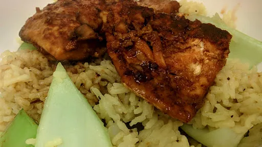

Paprika salmon with soy & honey
25 mins
Serves 4
Gluten Free

Here we have spiced the salmon up and set it alongside some crunchy pak choi. Gluten-free: make sure soy sauce is gluten-free
Ingredients
- 1 mug basmati rice
- 2 mugs boiling water
- 1 tsp pilau rice seasoning
- 2 pak choi
- 1 tbsp paprika
- 4 salmon steaks
- 1 tbsp toasted sesame oil
- 2 tbsp soy sauce
- 2 tbsp runny honey
Instructions
- Put the
rice1 mug
and on to cook in a large saucepan. After about 10 minutes, add the pak choi2
and return the lid to the pan. Leave for 2 minutes. Mix together, leaving the lid of the pan, and set aside until needed.
- Put the
paprika1 tbsp
on a plate and press the salmon steaks4
into it.
- Heat the
oil1 tbsp
in a frying pan and fry the salmon, taking care not to burn the paprika1 tbsp
. Once the salmon is cooked through, add the soy2 tbsp
and honey2 tbsp
to the pan and allow to simmer for 1 minute.
- Seave the flaked fish on top of the
rice1 mug
and drizzle over the sauce.
Nosh: Quick & Easy
Short Link
Long Link